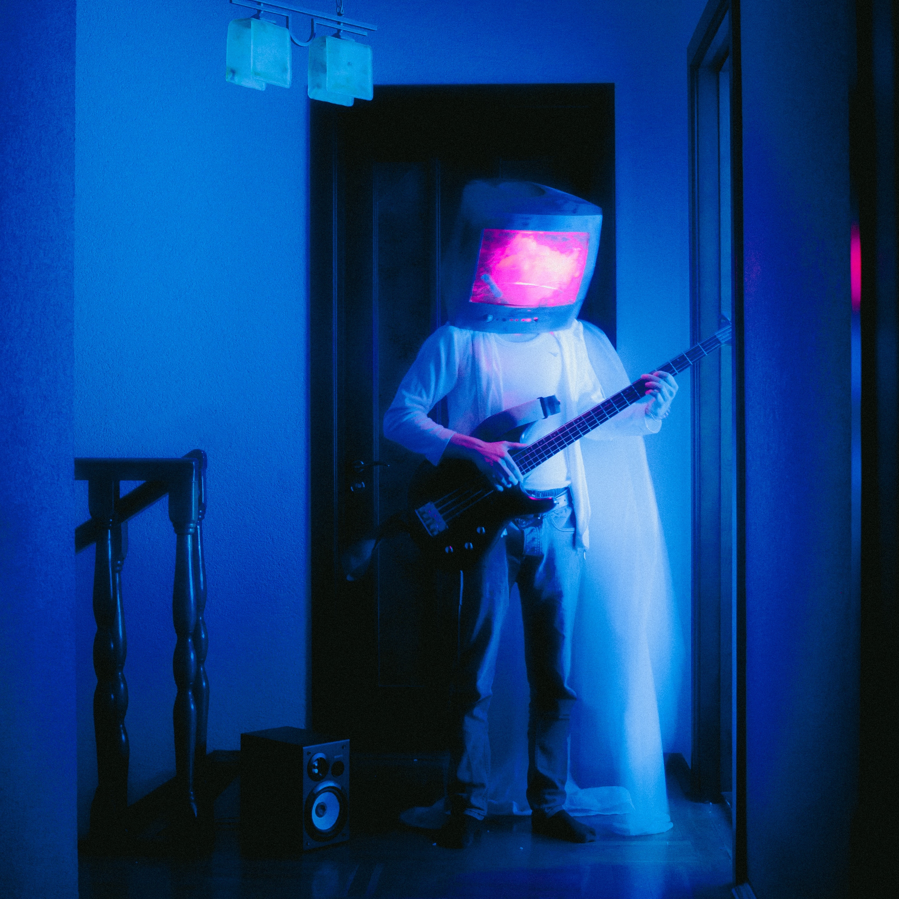

1. STATIC DREAMS 3:32 2. SCREENLIGHT SERENADE 2:03 3. CHANNELING EMOTIONS 4:04 4. BROADCAST BLUES 2:54 5. FLICKERING FAME 2:34 6. TUNING MYSELF (INTERLUDE) 1:23 7. REMOTE CONTROL SOUL 3:03 8. ANTENNA OF ANGST 2:50 9. RAY SUNSETS (INTERLUDE) 1:02 10. TELEVISION, ROCK 6:23
1 hr 12 min
19 September, 2012
Ventura Records and Holdings, a division of Universal Music Group
JAMES IVER
TELEVISION, ROCK